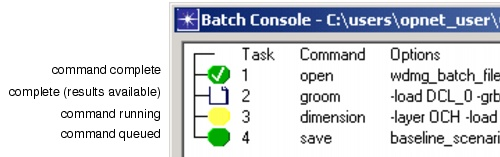
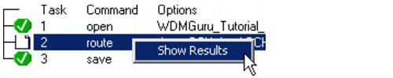

Batch Console > Running a SP Guru Transport Planner Batch File
Running a SP Guru Transport Planner Batch File
Procedure 16-2 describes how to run a batch file.
Procedure 16-2 Running a SP Guru Transport Planner Batch File
- Create a source scenario, if you have not already done so. For more information, see Creating a Source Scenario.
- Close all SP Guru Transport Planner projects (including the project containing your baseline scenario).
- Choose File > Batch Console.
The Batch Console dialog box appears. For more information, see Batch Console Dialog Box.
- Click Open Batch File and select the file you want to run.
- Click Start.
SP Guru Transport Planner runs the batch file.
The icons in the treeview show the progress of the run.
Figure 16-3 Treeview Icons During a Batch File Run

- To stop a run, click Stop.
- To see the results for a command, right-click on the command in the Batch Console treeview and choose Show Results.

End of Procedure 16-2
| Home © 1987-2007 OPNET Technologies, Inc. All Rights Reserved. This software may be covered by one or more U.S. Patents. See complete patent notice in the Legal Notices section. OPNET Support Center |